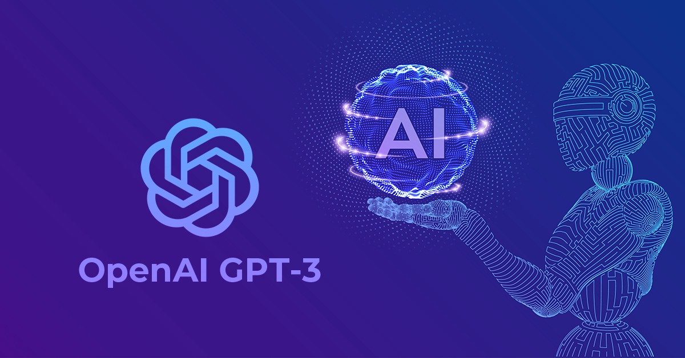
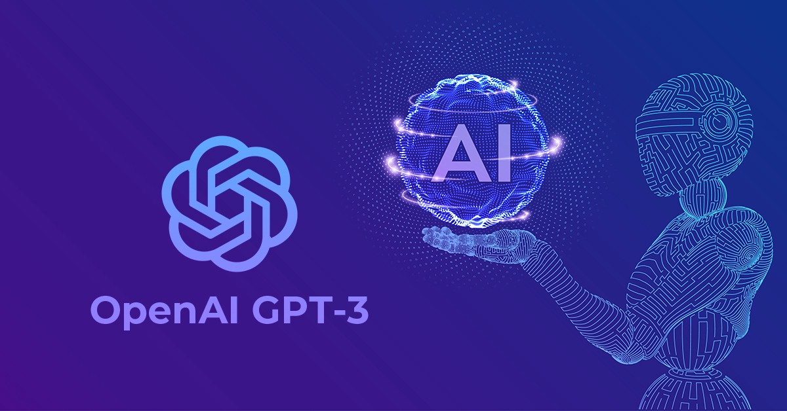

¿Que es Inteligencia Artificial?
La inteligencia artificial son sistemas que imitan la inteligencia humana para realizar tareas y puede menjorar iterativamente
a partir de la información que van recopilando.La Ia se manifiesta de varias formas y tipos como por ejemplo:
- Artificial Narrow Intelligence (ANI)
- Inteligencia Artificial General (AGI)
- Superinteligencia Artificial (ASI)
Inteligencia artificial y desarrolladores
Los desarrolladores emplean inteligencia artificial para realizar tareas de una forma más eficiente que, de otro modo, se realizarían manualmente: comunicaciones con clientes, identificación de patrones y resolución de problemas. Para comenzar con la inteligencia artificial, los desarrolladores deben contar con una formación en matemática y sentirse a gusto trabajando con algoritmos.
Al comenzar a utilizar inteligencia artificial para desarrollar aplicaciones, lo mejor es comenzar de a poco. Al diseñar un proyecto relativamente simple, como un juego “Tres en línea”, aprenderá los conceptos básicos de la inteligencia artificial. Aprender con la práctica es una excelente forma de aumentar cualquier habilidad, y la inteligencia artificial no es distinta en este aspecto. Luego de completar uno o más proyectos pequeños, no hay límites para la inteligencia artificial.
Cómo las empresas usan la IA
De acuerdo con la Harvard Business Review, las empresas utilizan la IA principalmente para:
- Detectar y disuadir intrusiones de seguridad (44%)
- Resolver problemas tecnológicos de los usuarios (41%)
- Reducir el trabajo de la gestión de producción (34%)
- Medir el cumplimiento interno en el uso de proveedores aprobados (34%)
La IA como ventaja imperativa y competitiva
de ingresos y aumentar la lealtad de los clientes. Se está convirtiendo rápidamente en una ventaja competitiva para muchas organizaciones. Con la IA, las empresas pueden cumplir más objetivos en menos tiempo, crear experiencias personalizadas y atractivas para los clientes y predecir los resultados comerciales para impulsar una mayor rentabilidad.
Sin embargo, la IA aún sigue siendo una tecnología nueva y compleja. Para aprovecharla máximo, necesita experiencia en el diseño y la administración de sus soluciones de IA de forma equilibrada. Un proyecto de IA exitoso requiere más que simplemente contratar a un científico de datos. Las empresas deben implementar las herramientas, los procesos y las estrategias de gestión correctas para garantizar el éxito de la IA.
Ejemplos de Inteligencias Artificiales
-
GPT-3
Generative Pre-trained Transformer 3, conocida por sus siglas (GPT-3), es un modelo de lenguaje autorregresivo que emplea aprendizaje profundo para producir textos que simulan la redacción humana. Es la tercera generación de los modelos de predicción de lenguaje perteneciente a la serie GPT, creados por OpenAI, un laboratorio de investigación de inteligencia artificial con sede en San Francisco.
Es parte de una tendencia en sistemas de procesamiento de lenguaje natural (NLP) basados en "representaciones de lenguaje pre-entrenadas".Previo a la liberación de GPT-3, el modelo de lenguaje más grande era Turing NLG desarrollado por Microsoft, presentado en febrero de 2020, con una capacidad diez veces menor que el de GPT-3.
 

-
DALL-E 2
DALL-E 2 ha sido capaz de generar rostros fotorrealistas desde un principio, pero los responsables del proyecto no permitían su circulación puertas afuera debido al riesgo de creación de deepfakes y contenido falso. Entonces, ¿qué ha cambiado para que los investigadores puedan compartir rostros autogenerados? OpenAI ha implementado una serie de cambios para mejorar la seguridad de esta tecnología.
Detrás de DALLE-2 está GPT-3, un poderoso modelo de lenguaje presentado en 2020 capaz de generar diversos tipos de contenido a través de indicaciones escritas, y un modelo de "difusión", que comienza con un patrón de puntos aleatorios y altera gradualmente ese patrón para generar una imagen cuando reconoce aspectos específicos. En este campo también nos encontramos con otras propuestas prometedoras, como la recientemente presentada Parti de Google, que utiliza un modelo autorregresivo" y permite permite entradas de texto más extensas.
-
Stable Diffusion
Stable Diffusion es un modelo de aprendizaje automático desarrollado por Stability AI para generar imágenes digitales de alta calidad a partir de descripciones en lenguaje natural. El modelo se puede usar para diferentes tareas, como la generación de traducciones de imagen a imagen guiadas por mensajes de texto y la mejora de imágenes.
A diferencia de modelos de la competencia como DALL-E, Stable Diffusion es de código abierto y no limita artificialmente las imágenes que produce. Los críticos han expresado su preocupación por la ética de la IA, afirmando que el modelo se puede utilizar para crear deepfakes . Puede ejecutarse en el hardware del usuario equipado con una tarjeta gráfica (GPU) y fue elogiado por PC World como "la próxima aplicación revolucionaria para su PC". Desde su lanzamiento inicial, más de 200,000 personas han descargado el código.
|
|